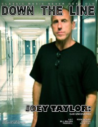

Down The Line
Jul 2010, #7
| Cover |
|---|
|  |
 Online Exclusively Online Exclusively |
| Writers in this Issue |
| Crosslin, Matt Lory, Josh Ruff, Steve |
Ojo Taylor
Cover Feature:- "Ojo Uncovered" by Steve Ruff
- "The '80s Were a Lifetime Ago For All of Us" by Matt Crosslin
- "A Lifetime of Stars and Dreams" by Steve Ruff
- "Ryan Weaver: The Timeless Art of Tattooing" by Steve Ruff
- "Bill Walden: ... continuing the discussion on "Homosexuality, God, and the Church"..." by Steve RuffBill Walden (Undercover, Fourth Watch)
- "Brian Kirsch: Sterling Dishes on Life, Pain, Regression, and Mr. Sunshine" by Steve Ruff
- "Was It So Bad?" by Josh Lorymusings on success and Christian rock
- Jimmy Hotz - Beyond The Crystal Sea by Matt Crosslin
- Ojo Taylor - Relative by Steve Ruff
- The Lost Dogs - Old Angel by Matt Crosslin
- MeWithoutYou - It's All Crazy! It's All False! It's All A Dream! It's Alright by Josh Lory
- The Choir - Burning Like The Midnight Sun by Steve Ruff
- Maylene and the Sons of Disaster - III by Josh Lory
- Doug Burr - O Ye Devastator by Steve Ruff
- King Never - Possibilities by Matt Crosslin
- A Hill To Die Upon - Infinite Titanic Immortal by Matt Crosslin
- Vision - Mountain In The Sky EP by Matt Crosslin
- Vision - Vision by Matt Crosslin
- Voice of the Mysterons - They Have Pulled Down Deep Heaven On Their Heads by Josh Lory
- Grave Robber - Inner Sanctum by Josh Lory
- Disaffection - Begin The Revolution by Steve Ruff
- Rex Carroll - That Was Then, This Is Now by Matt Crosslin
- My Silent Wake, The Drowning - Split EP by Steve Ruff
- King James - The Fall [reissue] by Matt Crosslin
- Adiastasia - Life War (Collector's Edition) by Matt Crosslin
- Blood and Water - In Character by Matt Crosslin
Relevant Links
Official web site of Down The LineIssue Repository @ the Internet Archive
This issue is available exclusively online.
© 2011 CMnexus. Last updated May 2025. Contact: editor -AT- cmnexus -DØT- org